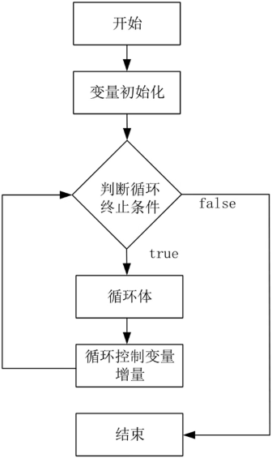

首页 > 编程笔记
Go语言for循环的用法
在 Go 语言中，for 循环是一个循环控制结构，可以执行指定次数的循环。循环体不停地进行循环，直到循环终止条件返回false时自动退出循环，执行 for 的
for 循环语句的语法格式如下：
for 循环的执行流程如图1所示。
初始语句可以被忽略，但是初始语句之后的分号必须写，例如：
与其他编程语言不同的是，Go语言中的循环语句只支持 for 关键字，而不支持 while 和 do-while 结构，关键字 for 的基本使用方法与 C/C++ 中非常接近；例如：
Go语言中的 for 循环和其他编程语言较大的不同点在于，for 后面的条件表达式不需要用圆括号
使用循环语句时，需要注意以下几点：
}之后的语句。for 循环语句的语法格式如下：
for (循环控制变量初始化; 循环终止条件; 循环控制变量增量)
{
循环体
}
- 循环控制变量初始化。
- 执行循环终止条件，如果判断结果为真，则进入步骤③；如果判断结果为假，则循环终止并退出。
- 执行循环体。
- 执行循环控制变量增量，跳转进入步骤②。
for 循环的执行流程如图1所示。

图1：Go语言 for 循环的执行流程
图1：Go语言 for 循环的执行流程
1) for 循环中的初始化语句
初始语句是在第一次循环前执行的语句，一般使用初始语句执行变量初始化，如果变量在此处被声明，其作用域将被局限在这个 for 的范围内。初始语句可以被忽略，但是初始语句之后的分号必须写，例如：
step := 2
for ; step > 0; step-- {
fmt.Println(step)
}
2) for 循环中的条件表达式——循环终止条件
每次循环开始前都会计算条件表达式，如果表达式为 true，则循环继续，否则结束循环，条件表达式可以被忽略，忽略条件表达式后默认形成无限循环。3) for循环中的结束语句——每次循环结束时执行的语句
在结束每次循环前执行的语句，如果循环被 break、goto、return、panic 等语句强制退出，结束语句不会被执行。与其他编程语言不同的是，Go语言中的循环语句只支持 for 关键字，而不支持 while 和 do-while 结构，关键字 for 的基本使用方法与 C/C++ 中非常接近；例如：
sum := 0
for i := 0; i < 10; i++ {
sum += i
}
Go语言中的 for 循环和其他编程语言较大的不同点在于，for 后面的条件表达式不需要用圆括号
()括起来。使用循环语句时，需要注意以下几点：
-
左花括号
{必须与 for 处于同一行。 - Go语言中的 for 循环与C语言一样，都允许在循环条件中定义和初始化变量，唯一的区别是，Go语言不支持以逗号为间隔的多个赋值语句，必须使用平行赋值的方式来初始化多个变量。
- Go语言的 for 循环同样支持 continue 和 break 来控制循环，但是它提供了一个更高级的 break，可以选择中断具体的哪一个循环。
关注公众号「站长严长生」，在手机上阅读所有教程，随时随地都能学习。内含一款搜索神器，免费下载全网书籍和视频。

微信扫码关注公众号